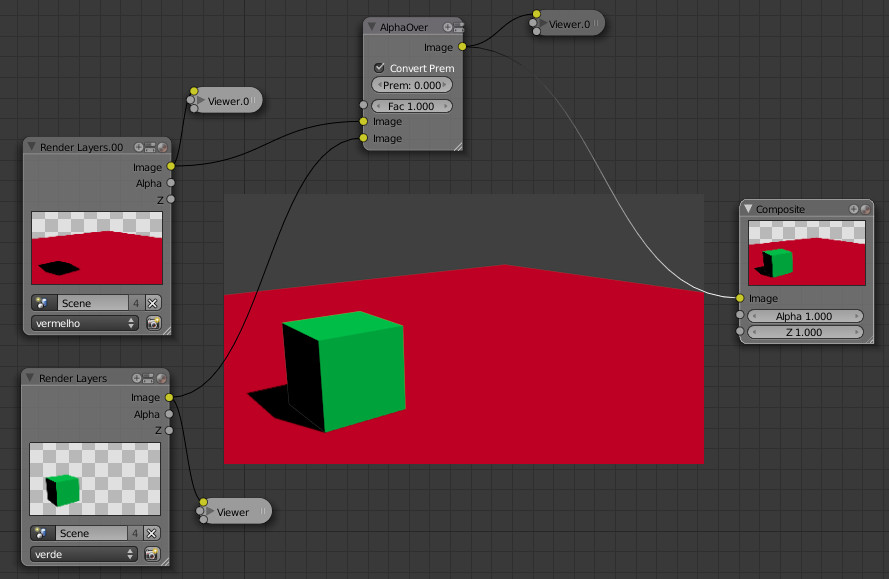
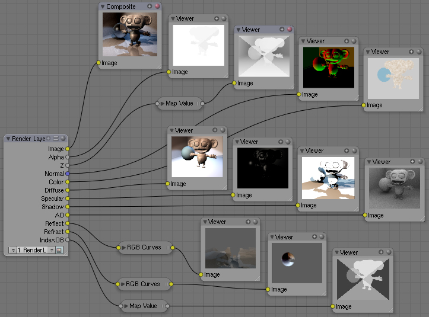
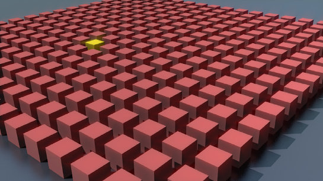
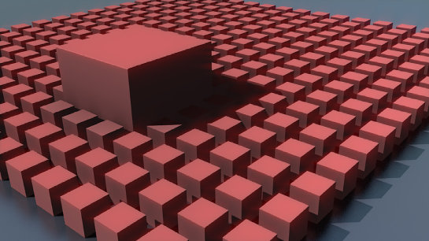
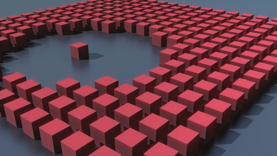
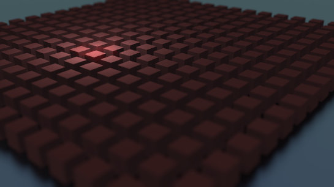
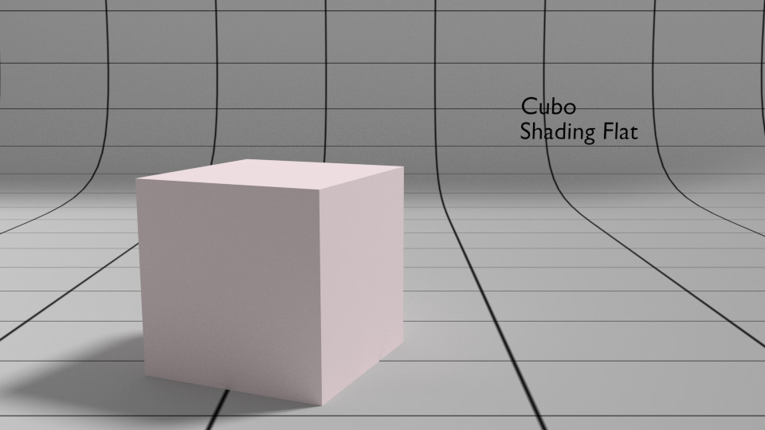
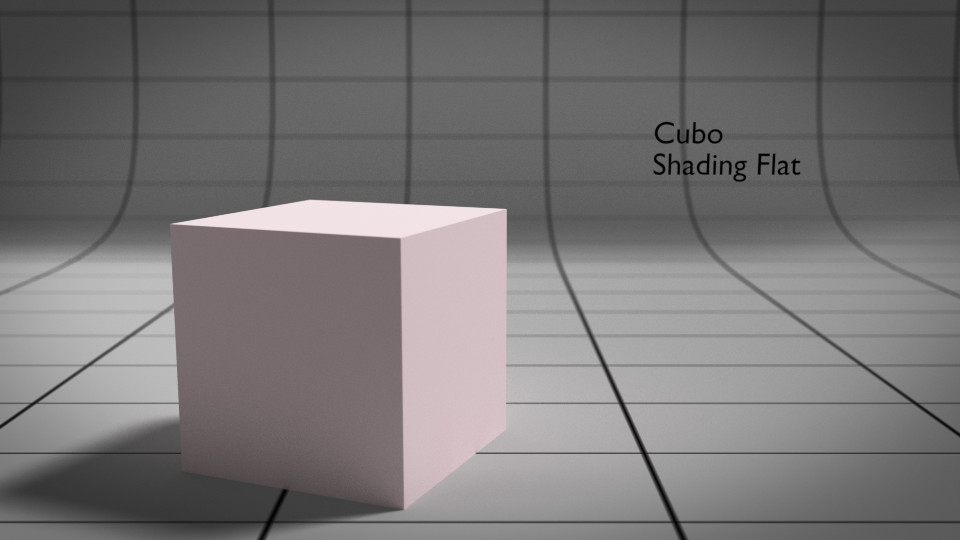

Introdução à composição no Blender
Definição
O termo Composição pode ser utilizado em dois contextos com significados diferentes. Em inglês, os termos Composition e Compositing identificam essa distinção.
No contexto das artes visuais, composição (Composition) é o posicionamento ou organização da disposição dos elementos visuais. O termos é muitas vezes utilizado como sinónimo de design, layout, estrutura formal ou organização visual.
No contexto digital, composição (Compositing) é também utilizado para identificar o processo de combinar múltiplas imagens numa imagem única. Em filmes, é comum fazer um ator filmado ao vivo aparecer sobreposto a um fundo gerado por computador (chromakey). Nas renderizações 3D, é comum renderizar multi-pass (várias "passes") e depois utilizar a composição para controlar a aparência final da cena manipulando as "passes" individualmente. Existem dois worflows de composição: composição baseada em nós e composição baseada em camadas. Na composição baseada em nós o compósito é representado como um gráfico de árvore.
Alguns termos e conceitos importantes no Compositing
Render Layers permitem isolar os diferentes objetos presentes numa cena, renderizando diferentes objetos em imagens (layers) diferentes. Desta forma, é possível corrigir ou manipular objetos isoladamente, não sendo necessário renderizar novamente tudo o que não foi alterado/manipulado.
 Na imagem acima são combinados os Render Layers com os nomes "vermelho" e "verde". Ambos pertencem à mesma cena (nome "Scene").
Render Pass é um subconjunto de Render Layers, permite separar diferentes aspetos da cena como sombras, brilhos ou reflexos, em imagens separadas. Estes aspetos (Diffuse/Beauty Pass, Specular/Highlight Pass, Reflection Pass, Matte Pass, Shadow Pass, Effects Pass, Depth Pass, etc.) podem depois ser trabalhados isoladamente antes de compostos na imagem final.
 Imagem de Roger Wickes retirada da Blender Wiki
Sugestões importantes na Composition
1. Elemento central
Existem vários recursos importantes para auxiliar na tarefa de definir claramente, realçar, o elemento de maior interesse da cena guiando a atenção do espetador.
Contraste
Existem diversas formas de melhorar o contraste da sua cena. Nas imagens abaixo, é visível a criação de maior contraste através do uso da cor, dimensão, organização e iluminação.
   Imagens de Hess, R. (2011).Tradigital blender a CG animator's guide to applying the classic principles of animation. Amsterdam: Focal Press.
Profundidade de Campo (Depth of Field)
A Profundidade de Campo é uma forma simples de aumentar o realismo das imagens e de isolar ou destacar os elementos mais importantes na composição.
Nas imagens abaixo, mostramos um exemplo sem e com Depth of Field, maior contraste e Vignette. Os últimos dois foram adicionados no compositor de nós.
  Sugestão: consulte Introdução ao editor de nós.2. Enquadramento e Estrutura
Os objetos principais não devem ser colocados de forma caótica e o ponto de vista, a posição do observador, influencia de forma importante a estética da imagem. A sua imagem deve ser cuidadosamente planeada na sua organização e enquadramento.
Regra dos Terços e outras
O Blender disponibiliza várias linhas de guia (terços, diagonais, etc.) para auxiliar na composição da sua cena. A Regra dos Terços é uma solução clássica que resulta muito bem. Sugere que os elementos importantes da composição devem surgir alinhados com as linhas ou nas interseções.

Distância focal
A escolha dos mm na distância focal (focal length) tem um impacto imenso na composição. Em síntese: lentes grande-angular exageram a distância e o tamanho relativo dos objetos; lentes telefoto esbatem diferenças na distância e tamanho relativo dos objetos. Para mais informações e exemplos, consulte o texto sobre a Câmara.
Nas imagens abaixo, foram utilizadas lentes com 100mm e 20mm. Obviamente, a câmara teve de ser ajustada/movimentada para compensar e obter uma composição similar.


Sugestão: consulte Configurações básicas da câmara.
Ponto de vista (viewpoint)
A posição da câmara e ângulo são aspetos importantes a considerar pois afetam a perceção da cena. Em renders de personagens, posicionar a câmara ao nível da visão é uma boa escolha. Tenha em atenção que se posicionar a câmara num ponto mais elevado do que o objeto, este vai aparentar ser mais curto, menor, mais frágil. Se posicionar abaixo, o objeto vai surgir maior, mais forte e poderoso.
Equilíbrio
É importante considerar o equilíbrio da composição. Por exemplo, objetos colocados em lados oposto da caomposição devem ter correspondência entre si em termos de dimensão, volume e cor.
Material adicional recomendado
- The 10 Basic Rules Of Image Composition
- Understanding Composition @ Blenderguru.com
- Into The Abyss: Teal and Orange - Hollywood, Please Stop the Madness
- Composition, Angles & Viewpoints
- Scene-Compositing using Layers
- Occlusion pass guide
- What is Z Depth?
- Simulating Film Effects with Curves
- The rule of three
- How Photography and the art of composition can inform the 3d Artist
- Top 5 Elements of Composition